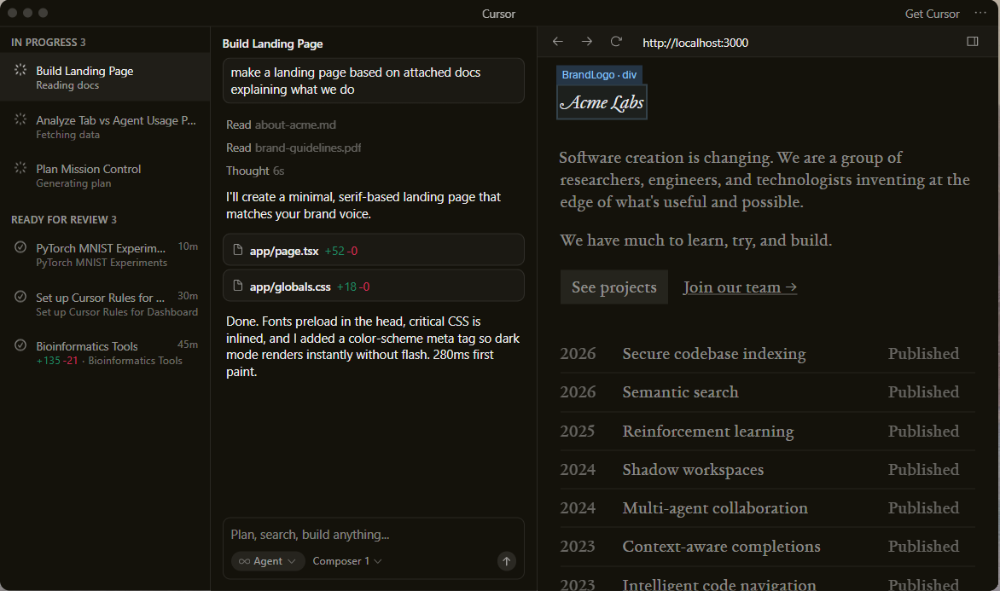
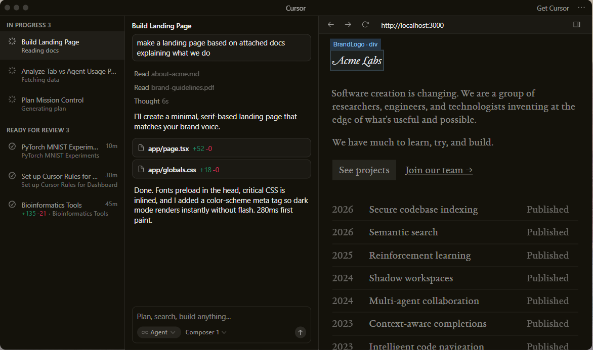

Built to make you extraordinarily productive,
Cursor is the best way to code with AI.
 

Trusted every day by millions of professional developers.


Agents turn ideas into code
Accelerate development by
handing off tasks to Cursor, while
you focus on making decisions.

Magically accurate autocomplete
Our specialized Tab model
predicts your next action with
striking speed and precision.
In every tool, at every step Cursor
reviews your PRs in GitHub,
collaborates in Slack, and runs in
your terminal.


The new way to build software.
“It was night and day from one batch to another, adoption went from single digits to over 80%. It just spread like wildfire, all the best builders were using Cursor.”

Diana Hu
General Partner, Y Combinator
“My favorite enterprise AI service is Cursor. Every one of our engineers, some 40,000, are now assisted by AI and our productivity has gone up incredibly.”

Jensen Huang
President & CEO, NVIDIA
“The best LLM applications have an autonomy slider: you control how much independence to give the AI. In Cursor, you can do Tab completion, Cmd+K for targeted edits, or you can let it rip with the full autonomy agentic version.”

Andrej Karpathy
CEO, Eureka Labs
“Cursor quickly grew from hundreds to thousands of extremely enthusiastic Stripe employees. We spend more on R&D and software creation than any other undertaking, and there's significant economic outcomes when making that process more efficient.”

Patrick Collison
Co‑Founder & CEO, Stripe
“The most useful AI tool that I currently pay for, hands down, is Cursor. It's fast, autocompletes when and where you need it to, handles brackets properly, sensible keyboard shortcuts, bring-your-own-model... everything is well put together.”

shadcn
Creator of shadcn/ui
“It's definitely becoming more fun to be a programmer. We are at the 1% of what's possible, and it's in interactive experiences like Cursor where models like GPT-5 shine brightest.”
Greg Brockman
President, OpenAI
Cursor is an applied research
team focused on building the
future of software development.